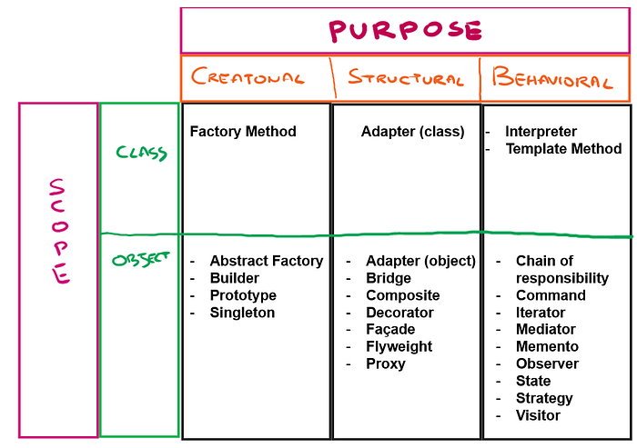
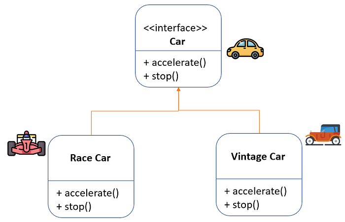
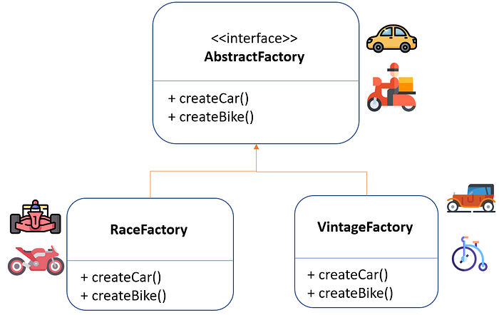
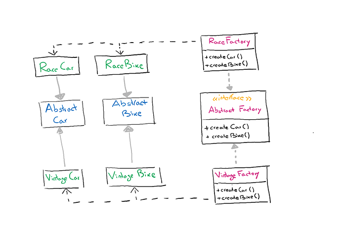

Design Patterns with Python for ML Engineers: Abstract Factory
Learn how you can structure your code by adopting design patterns.
November 29, 2024 · Design Pattern, Best Practices, Abstract factory
Introduction
A pattern describes a frequently recurring problem and proposes a possible solution in terms of class/object organization that generally found to be effective in solving the problem itself.
Design Patterns are characterized by four main elements:
- Name: mnemonic reference that allows us to identify the problem and solution in one or two words.
- Problem: description of the problem and context to which the pattern is intended to provide a solution.
- Solution: describes the basic elements that constitute thesolution and the relationships between them.
- Consequences: specifies the possible consequences that the application of the proposed solution may entail.
There are several categories of design patterns but two main criteria have been identified:
What the pattern refers to:
- Objects: relationships between objects that can change atexecution.
- Classes: concern relationships between classes and subclasses.
What the pattern does (purpose) :
- Creational: concerns the process of creating objects.
- Structural: concerns the composition of classes and objects.
- Behavioural: defines how classes and objects interact anddistribute responsibilities among themselves.
But how many design patterns exist? In the following figure, you will see a list of design patterns structured in a table according to their scope and purpose. In the following articles, we would go through the most common design patterns.

How to define a design pattern?
A design pattern is defined by some fundamental properties that describe and facilitate its use. These properties are :
- Structure: graphical representation via UML of the classes involved andof their relationships. (1) Participants: classes participating in the pattern, their relationships and responsibilities. (2) Collaborations: how the various classes collaborate to achieve the objectives.
- Consequences: advantages and disadvantages of using the pattern and possible side effects of using the pattern.
- Implementation: techniques and suggestions for implementationwith reference also to specific programming languages.
- Example source code: code fragments that provide aguide for implementation.
- Known uses: examples of use in existing systems.
- Related patterns: differences and most important relationships with other patterns.
Abstract Factory
The easiest way to understand how to define a design pattern is in my opinion show an example, let’s start with the Abstract Factory.
We often find ourselves having to create new objects that are similar but different from each other. Suppose we have to create several cars, all of them will share several properties such as having four wheels and a steering wheel, and they will also share several functionality such as accelerate and stop (break).
But if we want to create cars that have their own peculiarities such as “vintage cars” and “racing cars” these will have attributes and functions that are particular to the subclass.
And this is precisely where the design pattern comes to our aid, to help us easily and dynamically manage the creation of these objects that share properties and functions but each is different from another. The first thing the Abstract Factory recommends is to explicitly declare interfaces (classes that cannot be instantiated) for each product, for example for a car and a bike product. Then you can have all product variants implement the interfaces so we are sure they will share attributes and functions that are common to all objects , such as accelerate() and stop().

Now we define an interface of an abstract factory that is, an interface of a class with functions that allow us to create a new object of the type Car or Bike. The factory that will actually create the car of the type race or vintage will have to implement the methods of the interface.

This way you will have a factory for each specific subproduct, and you will not have to add attributes and functions during the creation of each individual object.
In addition, a customer who uses a factory specification such as RaceFactory will get a race car. After a few months, when he goes to buy a new bike, it will also be a race bike because it comes from the same factory, so he won’t have to worry about having products with different styles.

Let’s code
If so far you are still unclear about what this design pattern is for and how it works, welcome to the club! If you are like me, programming will clear your mind.
First, we create an AbstractFactory, in Python, an abstract class is a class that inherits ABC, as in the following example. This abstract class has two methods, one to create a car and one to create a bike. So any class that inherits this abstract class will have to implement these two methods in its own way.
from __future__ import annotations
from abc import ABC, abstractmethod
class AbstractFactory(ABC):
@abstractmethod
def createCar(self) -> Car:
pass
@abstractmethod
def createBike(self) -> Bike:
pass
class RaceFactory(AbstractFactory):
def createCar(self) -> Car:
return RaceCar()
def createBike(self) -> Bike:
return RaceBike()
class VintageFactory(AbstractFactory):
def createCar(self) -> Car:
return VintageCar()
def createBike(self) -> Bike:
return VintageBike()In both RaceFactory and VintageFactory we have methods that create a car and a bike. You see that both return an object of type Car and Bike (indicated by the symbol: -> Car).But actually, Car and Bike are abstract classes the actual classes will be RaceCar and VintageCar (RaceBik and VintageBike). In this way, each Factory will build the cars (or bikes) that relate to it.In this case, the only thing that changes between a RaceCar (RaceBike) and VintageCar (VintagBike) is that it prints “fast” instead of “slowly”.
class Car(ABC):
@abstractmethod
def accelerate(self) -> str:
pass
@abstractmethod
def stop(self) -> str:
pass
class RaceCar(Car):
def accelerate(self) -> str:
return "Accelerate really fast!"
def stop(self) -> str:
return "Stop really fast!"
class VintageCar(Car):
def accelerate(self) -> str:
return "Accelerate really slowly...!"
def stop(self) -> str:
return "Stop really slowly..."class Bike(ABC):
@abstractmethod
def turn(self) -> str:
pass
@abstractmethod
def honk(self) -> str:
pass
class RaceBike(Bike):
def turn(self) -> str:
return "Turn really fast!"
def honk(self) -> str:
return "Honk loudly!"
class VintageBike(Bike):
def turn(self) -> str:
return "Turn really slowly..."
def honk(self) -> str:
return "Honk quietly..."Now the customer will choose one of the Factories (taking it as input) and then he will create a car and a bike , and he will be sure that the car and the bike will have the same style, they will both be either race or vintage type.
After creating them he will test them using the methods that the Car and Bike classes provide.
def client_code(factory: AbstractFactory) -> None:
car = factory.createCar()
bike = factory.createBike()
print(f"{bike.turn()}")
print(f"{bike.honk()}", end="")if __name__ == "__main__":
print("Client: checks product style")
client_code(RaceFactory())
print("\
")
print("Client: checks product style")
client_code(VintageFactory())Final Thoughts
A Design Pattern describes a frequently recurring problem and proposes
a possible solution in terms of class/object organization that has generally been found to be effective in solving the problem itself. We are often faced with the problem of wanting to instantiate an object without specifying precisely the class, but respecting a consistency between multiple objects, and for this, it is very useful to learn how to use the Abstract Factory.
In future articles I will address additional design patterns that a Machine Learning Engineer needs to know in order to be able to write clean structured code.
The End
Marcello Politi
This article was published on Towards Data Science